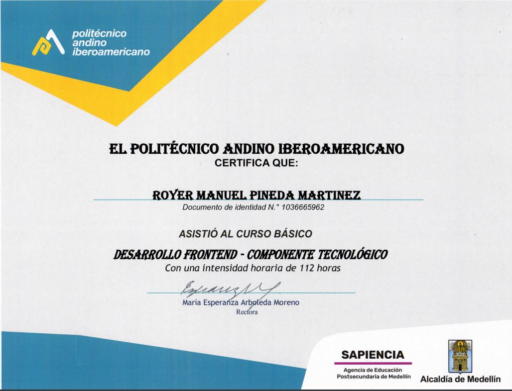
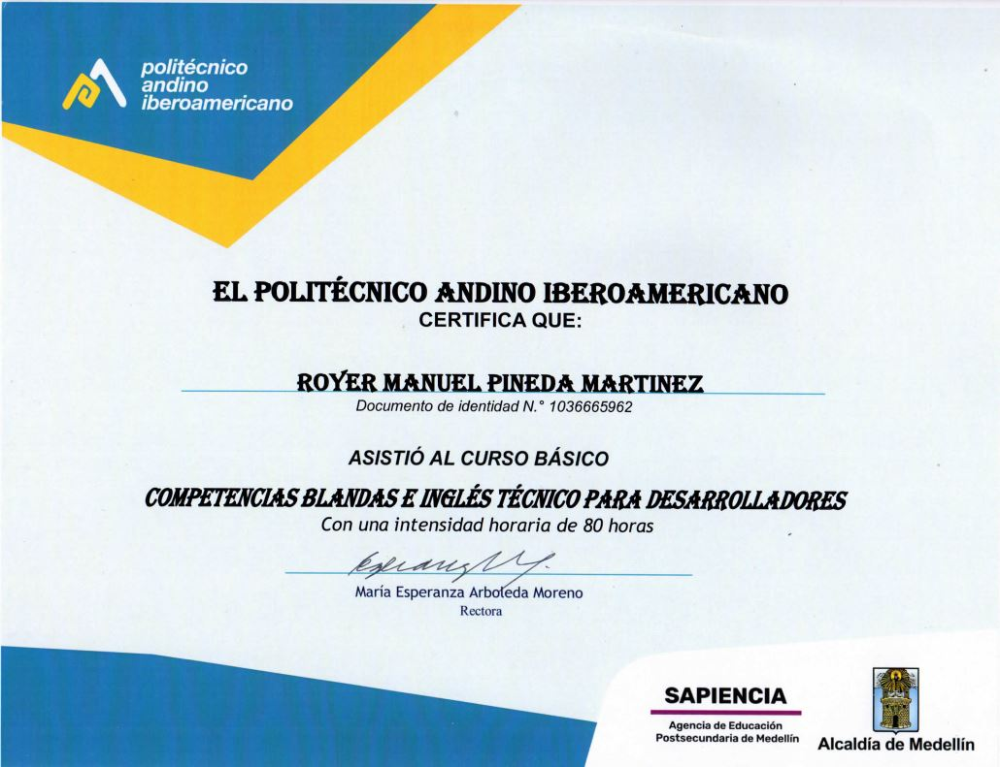
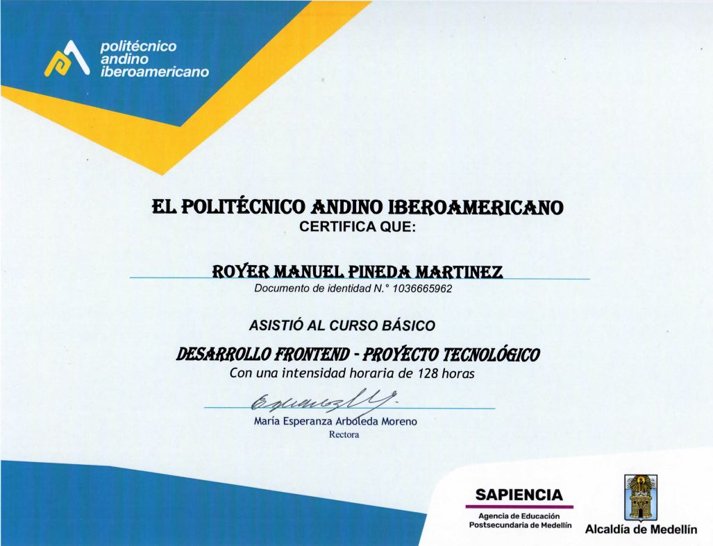

Technical skills

css

javascript
github
wordpress

html
Soft skills:
- Do my best in what i do.
- Always want learn new skills and technologies.
- Disciplined and organized.
- Good personal care.
Proactivity
Work in group
Comunication
Certificates



Know me:
My name is Royer Manuel Pineda Martinez or Manu for friends, live in medellin colombia.
Istudied front end development in poliandino iberoamericano here in my city.
The page where you are was made from cero by me.
I see each challenge like a chance.